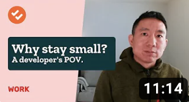
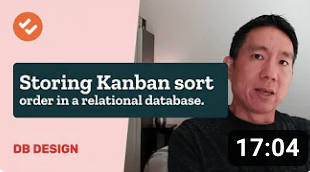

Ka Wai Cheungbuilder. chicago. web since 1997.
135 essays, a dozen apps, three books, one very long career.
SoftwareProjectsEssaysBooksCareerHow I workBlog
Dextopa new X for the desktop
135 essays, a dozen apps, three books, one very long career.
SoftwareProjectsEssaysBooksCareerHow I workBlog
20139 essays
Pix litelighter color picker
1Xone X post at a time. chrome ext
Books
DnsDigestDNS reports. retired jul 2025
Jan
 Wrigley Field, 1941
Wrigley Field, 1941
20098 essays
Aug
 Landing on a Great Name, 2020
Real Code, ep. 3
RunKWCtreadmill timer + run log
Landing on a Great Name, 2020
Real Code, ep. 3
RunKWCtreadmill timer + run log
20266 essays
20081 essay
20106 essays
LogoNerdgallery of sporting event logos

Real Code, ep. 420071 essay
WhyTVretro-fy YouTube TV. chrome ext

Real Code, ep. 1 OneSpota better new tab page. chrome ext201722 essays
Feb
Customer #000001Emailin’ ain’t easyGeorge Washington’s axeHindsight is…please don’t make me lookHow an early feature was bornLove hurtsOne vote of influenceProcesslessnessProject BugSpraySix o’ clock in the morning, you’re the last to hear the warningThe Big MigrationThe ridiculous thing we do every day
Mar
Apr
201511 essays
Flicksports scores without the fluff or spoilers
Take Twodesigning existing things the way I would want them to exist
Apr
201410 essays
Pixcolor picker. chrome ext
Real Code, ep. 2
Mar
202512 essays
Ka Wai Cheung
Jan
202415 essays
Jan
Mar
Apr
 Flash Application Design Solutions, 2006
Flash Application Design Solutions, 2006
 Comiskey Park, 1978
Comiskey Park, 1978
20113 essays
 37signals application, 2025
37signals application, 2025
201616 essays
Mar
May
Sep
 The Developer's Code, 2012
The Developer's Code, 2012
202311 essays
Dec
Code as the design mediumHow I build software (like a musician)It’s the end…and I feel fineOn transitioning from software writing to just writingStarting design with spaceThe nth impressionThe small pleasure of info tablesThe thing to think about with feature gatingUsing CSS classes as markersWhy cache invalidation is hardWhy it is hard to write about code